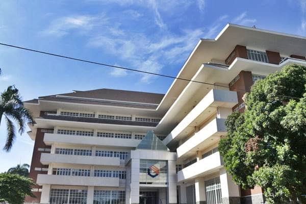
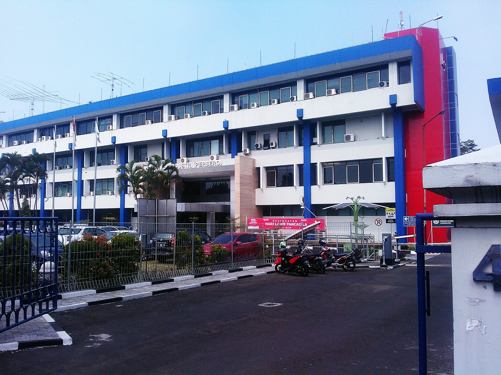

Profil
Hallo! Nama saya Mentari, Saat ini saya tengah menempuh pendidikan di Politeknik Negeri Bandung, Jurusan Teknik Komputer dan Informatika, Program Studi D4 Teknik Informatika.
Saya sangat termotivasi untuk menjadi seorang Programmer yang kompeten dan bertanggung jawab. Saya tertarik dengan dunia IT, khususnya pemrograman. Saya menyukai hal yang membuat kemampuan, minat dan bakat saya menjadi berkembang.
Motto Hidup
Tidak ada Menusia yang sempurna. tiap orang memang punya keterbatasan, namun setiap orang juga punya kelebihannya masing-masing.
Keterbatasan tidak harus membatasi kita dalam menggapai cita - cita. Karena apapun keterbatasan kita,jika kita mau, kita pasti mampu!
Hobby
Pada saat waktu luang, biasanya saya mengisi waktu luang saya dengan memasak, karena hobby saya memasak. Terkadang juga saya melatih skill pemrograman saya di platform pendidikan, seperti dicoding
Pendidikan

Politeknik Negeri Bandung
Tiap orang mempunyai hak yang sama untuk memperoleh pendidikan, dan kita haruslah bersyukur akan kesempatan yang kita dapat dalam memperoleh pendidikan yang layak, karena tidak semua orang memiliki kesempatan seperti kita. Dan berikut adalah riwayat pendidikan yang telah saya tempuh.
SMP Negeri 1 Paseh
Setelah lulus dari Sekolah Dasar, saya memutuskan untuk melanjutkan pendidikan saya di sini. Dulu, SMPN I Paseh merupakan Sekolah yang cukup favorit di lingkungan saya tinggal, dan saya merasa bangga dapat lulus seleksi dan menempuh pendidikan di sekolah ini.
SMK Itikurih Hibarna
Yap! Setelah saya lulus dari Sekolah Menengah Pertama, SMPN I Paseh, saya putuskan untuk melanjutkan pendidikan ke Sekolah Menengah Kejuruan (SMK). Banyak pengalaman dan kisah tak terlupakan di sekolah ini, walaupun bukan sekolah Negeri, namun fasilitas, kualitas, kondisi, tenaga pengajar serta ilmu yang saya dapat disini amat sangat baik.
Disini juga saya mulai belajar pemrograman dan menjadi siswa yang cukup aktif, beberapa kali saya meraih prestasi, diantaranya :
- Tingkat Kelas
-
Peringkat 3 di kelas 10
-
Peringkat 2 di kelas 11
-
Peringkat 1 di kelas 12
- Tingkat sekolah
- Juara 1 Cerpen tingkat sekolah
- Juara 3 Pidato tingkat sekolah
- Lain-lain
- Juara 3 LCC (grup) 2018
-
Lulus Sertifikasi Mikrotik (MTCNA) 2019
Politeknik Negeri Bandung
Setelah lulus dari Sekolah Menegah Kejuruan, saya mencoba mendaftar ke beberapa perguruan tinggi, salah satunya adalah Politeknik Negeri Bandung. Alhamdulillah ternyata saya diterima di 2 PTN, dan kini saya memutuskan untuk melanjutkan pendidikan saya di Polban.
Harapan Setelah Lulus
Saya mempunyai cita - cita menjadi seorang dosen atau menjadi seorang Aplication Developer. Harapan saya setelah lulus dari Politeknik Negeri Bandung adalah semoga saya mampu mengamalkan ilmu - ilmu yang telah saya dapat di JTK. Harapan lain saya adalah semoga saya mendapat pekerjaan yang sesuai dengan keinginan saya serta dapat membanggakan orang tua dan keluarga saya.
Pengalaman

Selulusnya saya dari SMK Itikurih Hibarna, saya hanya mengikuti pelatihan komputer di lembaga pelatihan, dan telah mendapatkan sertifikat Microsoft office. walaupun saya belum pernah bekerja setelah lulus sekolah, namun saya tetap memiliki pengalaman bekerja, berikut adalah pengalaman saya dalam bekerja.
PT. LEN Industri (Persero)
Ketika saya tengah menempuh pendidikan di SMK, tepatnya awal kelas XI, saya melaksanakan praktik kerja industri (Prakerin). Saya mencoba mendaftarkan diri di PT. LEN Industri (Persero) Bandung bersama teman-teman saya. Dan Alhamdulillah, saya dan teman saya lulus seleksi dan melaksanakan Prakerin di perusahaan BUMN ini, disini saya mendapat cukup banyak teman baru serta ilmu, dan disinilah saya mempunyai pengalaman bekerja.
Staff IT
Awalnya saya ditempatkan dibagian yang berkaitan dengan jurusan saya, yakni Teknik Komputer dan Jaringan (TKJ), tepatnya di bagian Sistem Informasi (Sisfo). Disini saya bertugas sebagai petugas yang tugasnya membantu karyawan memperbaiki permasalahan yang berkaitan dengan Komputer dan Jaringan. Dapat saya simpulkan, beberapa tugas saya adalah sebagai berikut :
- Mengatasi permasalahan komputer
- Mengatasi permasalah seputar jaringan
- Melakukan perawatan & perbaikan komputer
- Membantu pemasangan Sistem Operasi maupun software aplikasi
Staff Administrasi
Dikarenakan ada beberapa peserta Prakerin dari jurusan TKJ yang tidak ditempatkan sesuai jurusannya, maka peserta yang berada di bagian Sisfo pun bertukar tempat dengan peserta di bagian lain, termasuk saya. Saya akhirnya dipindahkan di bagian Inventory Control disini tugas saya berkaitan dengan Admistrasi, dan dapat saya simpulkan tugas saya adalah sebagai berikut :
- Menggandakan Dokumen
- Mengarsipkan dokumen
- Melakukan input/output data
- Melakukan pembukuan harian & mingguan
- Melakukan perubahan & perbaikan dokumen
Minat & Keahlian
Tiap orang pasti memiliki kepribadian, minat, bakat, serta keahlian yang berbeda-beda. Mereka hidup dengan saling membantu & melengkapi satu sama lain. Tak jarang beberapa dari hal tersebut menjadi syarat dalam melamar suatu pekerjaan, ataupun mendaftar untuk melanjutkan pendidikan. Berikut adalah minat dan keahlian yang saya miliki.
Minat
Saya tertarik dengan hal yang berkaitan dengan matematika, hitungan dan logika, juga menulis/mengarang cerita, serta hal yang berkaitan dengan komputer, terutama pemrograman.
Keahlian
Selama saya berkuliah di Politeknik Negeri Bandung, saya mendapat keahlian baru, seperti bahasa pemrograman C, dan java. Berikut adalah beberapa keahlian yang saya miliki :
- Membuat Website Sederhana
- Membuat Program sederhana menggunakan bahasa C
- Cukup mahir menggunakan Ms. Word
- Cukup mahir menggunakan Ms. Excel
- Cukup mahir menggunakan Ms. PowerPoint
Saya juga pernah mempelajari beberapa Bahasa Pemrograman, dan Bahasa Pemrograman yang pernah saya pelajari adalah sebagai berikut :
- HTML
- PHP
- Javascript
- Bahasa C
- Java
Leasson Learn
Leasson Learn yang saya dapat selama perkuliahan Proyek 1 adalah sebagai berikut :
- Mampu melakukan Instalasi dan konfigurasi aplikasi Git
- Mampu membuat website sederhana
- Dapat mengunggah website yang saya buat ke github
Sisipan Video
Peta Lokasi
Headline Repulika Online
Scraping dengan selenium